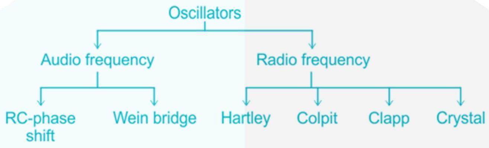
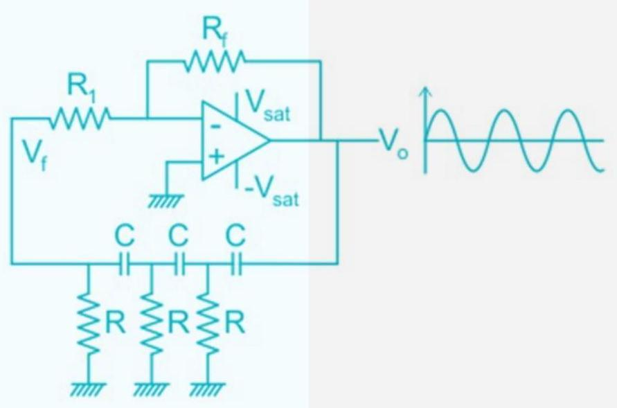
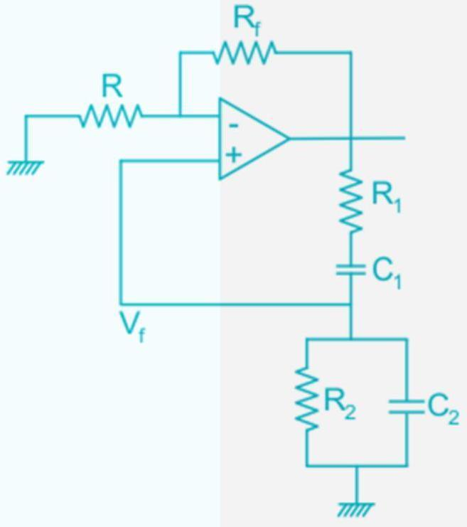
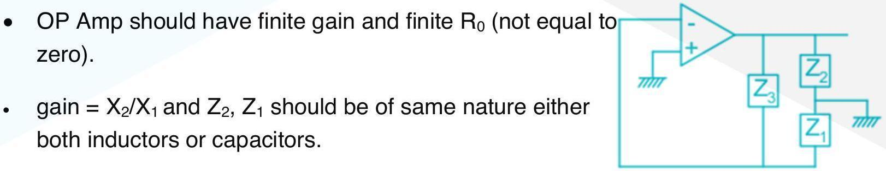
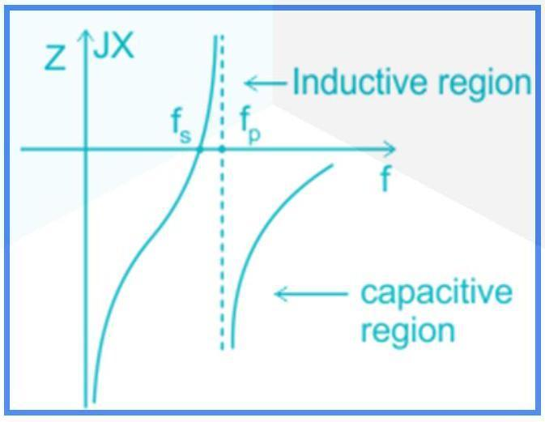
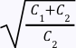

05 Oscillators
Oscillators
It is an electronic device that produces the oscillation without any Ac input. Sometimes refers to as DC to AC converter device.

RC - Phase Shift

𝑉 𝑓 1 𝑉 0 = β =− 29 1 𝑓 0 = 2π𝑅𝐶6 𝐻𝑧 for sustained oscillation: ⋆ 𝑅 𝑓 ≥29𝑅 1
Wein Bridge

||| ||| = 1 𝑉 𝑓 𝑉 0 3 hence A must be slightly greater than 3. for sustain oscillation.
𝑅 𝑓 ≥2𝑅 1 𝑓 0 = 2π 𝑅 1 𝐶 1 𝑅 2 𝐶 2
LC - Oscillators: (Radio frequency oscillators)

Hartley oscillator
It consist of Two inductor, one capacitor. 1 𝑓 0 = 2π 𝐿𝐶 where 𝐿= 𝐿 1 + 𝐿 2 It become bulky due to two inductors. It has capacitive tuning, no wear and tear problem. Its Gain = 𝐿 2 /𝐿 1
Colpit oscillator
It consist of 2-capacitor, 1-inductor 1 𝑓 0 = 2π 𝐿𝐶 1 𝑐 = 1 𝑐 1 + 1 𝑐 2 where It has inductive tuning and it face wear and tear problem.
Clapp
For Clapp oscillator add one extra capacitor in colpit oscillator, in series with the inductor.
1 𝑓 0 = 2π 𝐿𝐶 𝑒𝑥𝑡 Where is additional capacitor. 𝐶 𝑒𝑥𝑡
Crystal
It is most stable oscillator it has infinite figure of merit. ⋆ 𝐹. 𝑂. 𝑀= 𝑑θ 𝑑𝑓 It is made up of piezo-electric materials

general dimension are 1 𝑐𝑚× 1 𝑐𝑚× 1 𝑚𝑚 R is assumed to be zero. is due to metal plates and. ⋆𝐶 2 𝐶 2 ≫𝐶 1

1 1 𝑓 𝑠 = 𝑓 𝑃 = 2π 𝐿𝐶 2π 𝐿𝐶 1 𝑐 1 𝑐 2 Where 𝐶= 𝑐 1 +𝑐 2

𝑊 𝑃 𝑊 𝑠 =
Oscillators by using BJT
RC-Phase shift 1 𝑓 0 = 2π 6+4𝐾𝑅𝐶 𝐾= 𝑅 𝐶 /𝑅 β ≥23 + 29 𝐾 + 4𝐾 current gain β = ℎ 𝑓𝑒 = minima exist at 𝑘= 2. 7∴ ℎ 𝑓𝑒 ≥44. 5
LC - oscillators
𝑋 1 𝑋 2 ℎ 𝑖𝑒 ℎ 𝑓𝑒 ≥ 𝑋 2 + 𝑋 1 𝑅 𝑐
Points to Remember
If there is mutual inductance then 𝐿= 𝐿 1 + 𝐿 2 ± 2𝑀 linear oscillators produce sinusoidal wave. Nonlinear oscillators produces square, triangular and other shapes. UJT is used to form relaxation oscillator